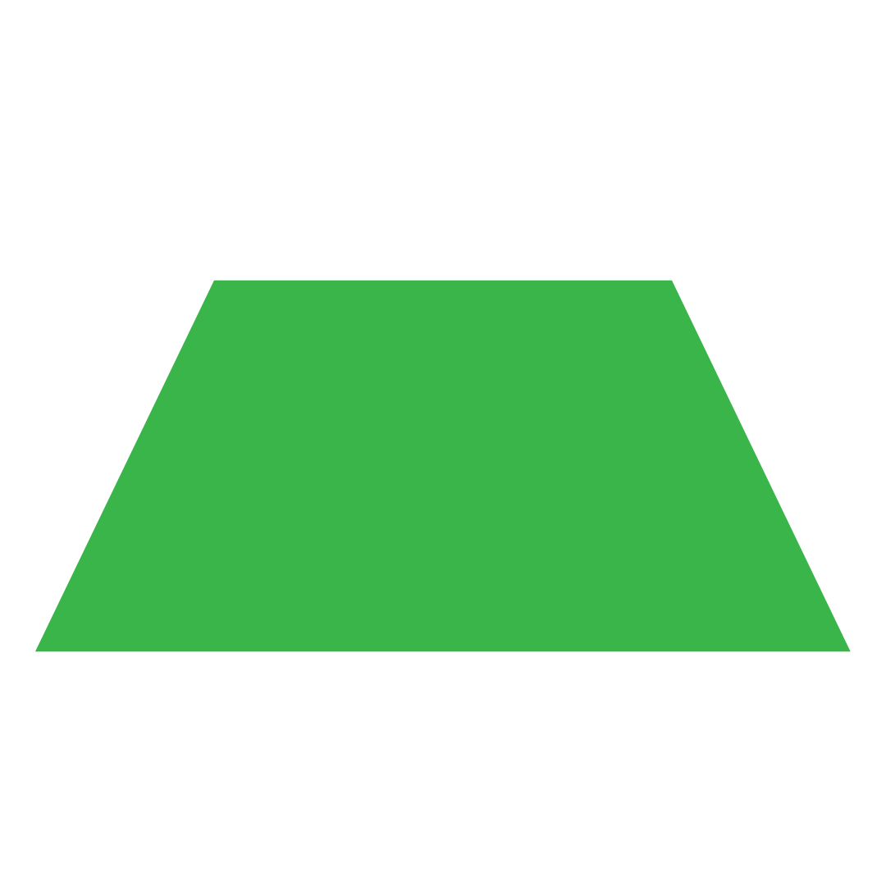

Trapézio
Trapézio é uma figura geométrica plana pertencente ao grupo dos quadriláteros que possui um par de lados paralelos. Os lados paralelos dos trapézios são chamados de bases. A base que possui maior medida recebe o nome de base maior e a que possui menor medida recebe o nome de base menor.
Classificação dos trapézios
Trapézios isósceles: são aqueles que possuem lados não paralelos congruentes;
Trapézios escalenos: são aqueles que não são trapézios isósceles;
Trapézios retângulos: são aqueles em que um dos lados não paralelos forma um ângulo de 90° com a base.
Elementos dos trapézios
Como os trapézios são polígonos, eles possuem os mesmos elementos comuns a todos os polígonos, a saber:
Lados: são os segmentos de reta que formam o polígono;
Vértices: são os pontos de encontro entre os lados;
Ângulos internos: ângulos no interior do polígono formados por dois lados consecutivos;
Ângulos externos: ângulos no exterior do polígono formados por um lado e pela extensão do outro, adjacente ao primeiro;
Diagonais: segmentos de reta que ligam dois vértices não consecutivos.